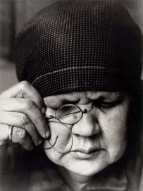

Escrito el
Alexander Rodchenko: lo nuevo, lo viejo, lo inevitable
Por Manuel Vázquez Montalbán
Cuando en 1925 Alexander Rodchenko visita la Feria de París dispuesto a deslumbrarse ante el muestrario de la vanguardia europea, comprueba orgulloso y asombrado que son los jóvenes creadores soviéticos los que apoyan las propuestas más audaces frente al “conservadurismo” formal de las vanguardias burguesas.
Él, pintor, fotógrafo experimental, diseñador de interiores y exteriores, presenta en la Feria de París nada menos que un “club obrero” y la apuesta especulativa de los jóvenes creadores soviéticos va dirigida a un nuevo destinatario social, eufemismo que significa la desaparición del cliente burgués y su sustitución por el proletariado como una nueva mirada complementaria de la mirada indagadora del artista.
Tanto Rodchenko como la plana mayor de formalistas y constructivistas asumen la lógica interna de la evolución de las artes y consideran que el proceso de investigación lingüística sólo puede activarlo cualitativamente ese nuevo destinatario social y visual que no tiene la retina malformada por la apropiación de la obra como mercancía y objeto de propiedad estética personal. El burgués filisteo aparecía como el falso gozador maleado por las fijaciones de su gusto. En cambio se concebía como libre y virgen la retina de un proletariado no resabiado, vanguardia de la Historia que necesariamente se convertía en vanguardia estética.
Rodchenko es el más representativo de la poética revolucionaria soviética que vivió una intensa década de creatividad entre 1910 y 1930. Una imagen obligada para cualquier memoria culta es la que recoge en un mismo espacio a Shostakovich, entonces jovencísimo músico, Maiakovski, Meyerhold y Rodchenko. Nada menos que cuatro renovadores fundamentales de la música, la escritura el teatro y las artes plásticas unidos por esa búsqueda del nuevo destinatario social, supremo avalador de lo nuevo frente a la viejo, que por el camino toparían con un intermediario no previsto que decidiría la batalla entre lo nuevo y lo viejo imponiendo lo inevitable.
Casi toda la vanguardia soviética de los años veinte procede de familias burguesas ilustradas y han tenido acceso al patrimonio cultural contemporáneo bien mediante la cultura escrita, bien mediante viajes que les han puesto en contacto con los centros de la vanguardia europea. Otras veces ha sido la visita a los salones de mecenas riquísimos como Tretiakov, Morozov y Shukin, los dos últimos inversores en pintura contemporánea que tras la revolución, de buen o mal grado, cedieron sus depósitos de obras de arte a los museos oficiales.
Lo cierto es que, al producirse la revolución, estos artistas se identifican con ella y proponen desde una nueva arquitectura a un nuevo monumentalismo público y la aplicación de las artes a la producción y formas de vida. Tatlin, Meyerhold, Malevich, Maiakovski, la Popova, la Stepanova, Rodchenko, El Lissitzky, Vesnin, Gabo y tantos otros se avinieron a hacer arte aplicado conectado con las necesidades revolucionarias sin perder sus propios códigos lingüísticos. Maiakovski escribía poesía publicitaria, carteles o prestaría su verbo a poesía, teatro, alocuciones de agitación conectadas con las masas.
El concepto de arte aplicado de los artistas soviéticos va más allá de prestarse a diseñar decorados teatrales o ilustraciones librescas y tanto Rodchenko como la Popova o la Stephanova diseñaron vestuario de trabajo, estampados para telas, trajes para happenings callejeros que se convertían en propuestas de nuevas formas de vida, porque para ellos no bastaba con cambiar la Historia si no se cambiaba la vida.
Conectar la creación con lo cotidiano, sometida a las necesidades de ese nuevo destinatario social es lo que lleva a Rodchenko a proponer su mono de trabajo a El Lissizky para diseñar tribunas públicas para oradores que rompen la liturgia del púlpito. Todos intervienen en la organización y diseño de cabalgatas y cualquier tipo de manifestación conmemorativa o lúdica, porque la calle es el nuevo escenario, la realidad el vehículo total de la expresividad y Maiakovski ha ordenado “... a la calle los futuristas, los tambores y los poetas”
. “Los pintores y los poetas -proclama Volodia Maiakovski en el Orden del Día del Ejército de las Artes– cogerán sin tardar los botes de pintura y mediante los pinceles de su arte iluminarán, cubrirán con dibujos las caderas, las frentes, los pechos de las ciudades, de las estaciones y de los siempre fugitivos rebaños de vagones”
. Y Kandinsky solicitaba en 1919 la construcción del Monumento Universal a la Utopía “... que este edificio se distinga por su ligereza y su movilidad. Su capacidad de cobijar no solamente a los que hoy viven en él, aunque sólo sea en los sueños, sino también a lo que hará nacer el primer sueño de mañana”
.